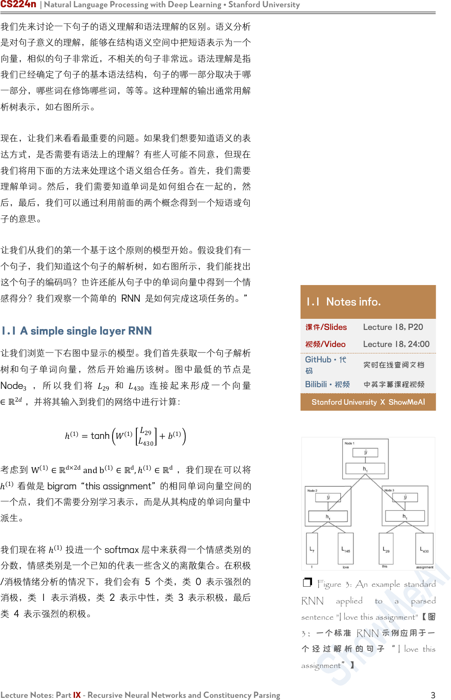
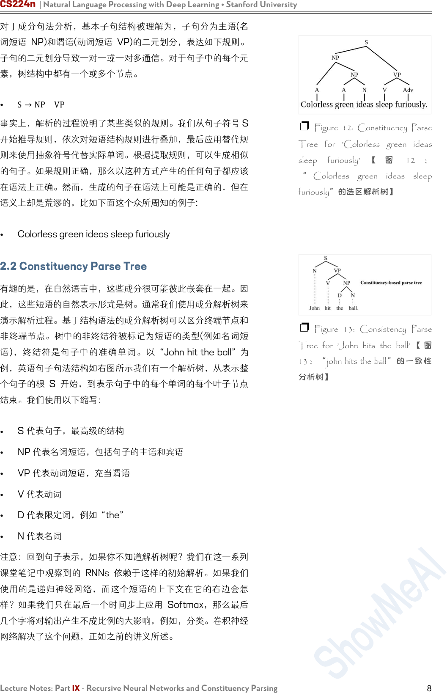

CS224n | Natural Language Processing with Deep Learning • Stanford University
Lecture Notes: Part IX - Recursive Neural Networks and Constituency Parsing
1
Lecture Notes: Part IX
Recursive Neural Networks and Constituency Parsing
CS224n 是顶级院校斯坦福出品的深度学习与自然语言处理方
向 专 业 课 程 ， 核 心 内 容 覆 盖 RNN 、 LSTM 、 CNN 、
transformer、bert、问答、摘要、文本生成、语言模型、阅读
理解等前沿内容。
这 组 注 释 中 的 “ RNN ” 指 的 是 “ Recursive Neural
Networks”，而不是“Recurrent Neural Networks”。前者
是后者的超集。
笔记核心词：
Recursive Neural Networks, 递归神经网络, 句法树, SU-RNN,
MV-RNN, RNTN, Constituency Parsing, 成分句法分析
课程全部资料和信息已整理发布，扫描下方任意二维码，均可
获取！！
微信公众号
·全套资料
回复 CS224n
底部菜单栏
Bilibili
·课程视频
视频简介
置顶评论
GitHub
·项目代码
阅读 ReadMe
点击超链接

CS224n | Natural Language Processing with Deep Learning • Stanford University
Lecture Notes: Part IX - Recursive Neural Networks and Constituency Parsing
2
1. Recursive Neural Networks
在这些笔记中，我们介绍并讨论了一种新的模型，它是之前讨论
过的递归神经网络的超集。递归神经网络(RNNs 如右图所示)非
常适合具有嵌套层次结构和内在递归结构的设置。
如果我们思考一个句子，它不是正是有这样的结构吗？以“A
small crowd quietly enters the historical church” 为 例 。 首
先，我们将句子分成名词短语、动词短语、“A small crowd”和
“quietly enters the historical church”。但是有一个名词短语
在 动 词 短 语 中 :“quietly enters” 和 “historical church” ， 等
等。这看起来确实很递归。
“语言的语法规则是高度递归的。因此，我们使用一个利用了递
归结构的模型。使用 RNN 建模句子的另一个好处是我们现在可
以输入任意长度的句子，这是一个巨大的头脑在 NLP 使用神经
网络和非常聪明的技巧使句子的输入向量相等尺寸相同，尽管句
子的长度不相等。(see Bengio et al., 2003; Henderson, 2003;
Collobert & Weston, 2008)
假设我们的任务是取一个句子，并将其表示为与单词本身语义空
间相同的向量。所以像“I went to the mall yesterday”、“We
went shopping last week”和“They went to the store”这样
的短语，彼此之间的距离都非常近。
我们已经看到了训练单字向量的方法，我们是否应该对二元组、
三元组等也做同样的事情。这可能非常有效，但这种想法存在两
个主要问题。
1) 单词的组合有无数种可能。存储和训练无限数量的向量将是
荒谬的。
2) 有些单词的组合虽然在语言中完全可以听到，但可能永远不
会出现在我们的 训练 / 开发 语料库中，所以我们永远学不会。
我们需要一种方法来取一个句子及其相应的词向量，并推导出嵌
入向量应该是什么。现在让我们先问一个非常有争议的问题。我
们用来表示所有单词的向量空间，具有足够的表达能力以至于能
够表示任意长度的所有句子，这是天真的想法吗？虽然这可能是
不直观的，但这些模型的性能表明，这实际上是一件合理的事
情。
1 Notes info.
课件/Slides
Lecture 18, P17
视频/Video
Lecture 18,
21:10
GitHub·代码
实时在线查阅文档
Bilibili·视频
中英字幕课程视频
Stanford University X ShowMeA
I
❐ Figure1:A standard Recursive
Neural Network【图 1：标准递归
神经网络】
❐ Figure 2: Parse Tree of a
sentence【图 2：句子的解析树】

CS224n | Natural Language Processing with Deep Learning • Stanford University
Lecture Notes: Part IX - Recursive Neural Networks and Constituency Parsing
3
我们先来讨论一下句子的语义理解和语法理解的区别。语义分析
是对句子意义的理解，能够在结构语义空间中把短语表示为一个
向量，相似的句子非常近，不相关的句子非常远。语法理解是指
我们已经确定了句子的基本语法结构，句子的哪一部分取决于哪
一部分，哪些词在修饰哪些词，等等。这种理解的输出通常用解
析树表示，如右图所示。
现在，让我们来看看最重要的问题。如果我们想要知道语义的表
达方式，是否需要有语法上的理解？有些人可能不同意，但现在
我们将用下面的方法来处理这个语义组合任务。首先，我们需要
理解单词。然后，我们需要知道单词是如何组合在一起的，然
后，最后，我们可以通过利用前面的两个概念得到一个短语或句
子的意思。
让我们从我们的第一个基于这个原则的模型开始。假设我们有一
个句子，我们知道这个句子的解析树，如右图所示，我们能找出
这个句子的编码吗？也许还能从句子中的单词向量中得到一个情
感得分？我们观察一个简单的 RNN 是如何完成这项任务的。”
1.1 A simple single layer RNN
让我们浏览一下右图中显示的模型。我们首先获取一个句子解析
树和句子单词向量，然后开始遍历该树。图中最低的节点是
Node
3
， 所 以 我 们 将
29
和
430
连 接 起 来 形 成 一 个 向 量
∈ℝ
2
，并将其输入到我们的网络中进行计算：
ℎ
(1)
=tanh
(1)
29
430
+
(1)
考虑到
W
(1)
∈ℝ
d×2d
andb
(1)
∈ℝ
d
,ℎ
(1)
∈ℝ
d
，我们现在可以将
ℎ
(1)
看做是 bigram “this assignment” 的相同单词向量空间的
一个点，我们不需要分别学习表示，而是从其构成的单词向量中
派生。
我们现在将 ℎ
(1)
投进一个 softmax 层中来获得一个情感类别的
分数，情感类别是一个已知的代表一些含义的离散集合。在积极
/消极情绪分析的情况下，我们会有 5 个类，类 0 表示强烈的
消极，类 1 表示消极，类 2 表示中性，类 3 表示积极，最后
类 4 表示强烈的积极。
1.1 Notes info.
课件/Slides
Lecture 18, P20
视频/Video
Lecture 18, 24:00
GitHub·代
码
实时在线查阅文档
Bilibili·视频
中英字幕课程视频
Stanford University X ShowMeA
I
❐ Figure 3: An example standard
RNN applied to a parsed
sentence ”I love this assignment”【图
3：一个标准 RNN 示例应用于一
个 经 过 解 析 的 句 子 “ I love this
assignment”】

CS224n | Natural Language Processing with Deep Learning • Stanford University
Lecture Notes: Part IX - Recursive Neural Networks and Constituency Parsing
4
现在我们对“I”和“love”做同样的处理，生成短语“I love”的向
量
ℎ
(1)
。同样，我们计算该短语在情感类上的得分。最后，最
有 趣 的 一 步 ， 我 们 需 要 合 并 两 个 短 语 “I love” 和 “this
assignment”。 这 里我们连接 的是单词短语 ，而不是单 词 向
量！我们用同样的方法，把两个 ℎ
(1)
连接起来并且计算
ℎ
(1)
=tanh
(1)
ℎ
(1)
ℎ
ℎ
(1)
+
(1)
现在我们有一个向量在向量空间中表示完整的句子”I love this
assignment”。此外，我们可以将这个 ℎ
(1)
通过与前面相同的
softmax 层，并计算整个句子的情绪概率。当然，模型只有在
经过训练后才能可靠地做到这一点。
现在让我们后退一步。首先，认为我们可以使用相同的矩阵
W
将所有单词连接在一起，得到一个非常有表现力的 ℎ
(1)
，然后
再次使用相同的矩阵
W
将所有短语向量连接起来，得到更深层
的短语，这样的想法是不是太天真了？这些批评是合理的，我们
可以通过下面对简单 RNN 的处理来解决它们。
1.2 Syntactically Untied SU-RNN
正如我们在前一节的批评中所讨论的，使用相同的
W
将名词短
语和动词短语组合在一起，将介词短语和另一个词向量组合在一
起，从直觉上看似乎是错误的。也许我们是直接将所有这些功能
合并到一个太弱的模型中。
我们能做的就是“从语法上解开”这些不同任务的权重。我们的
意思是，没有理由期望某一类输入的最优
W
与另一类输入的最
优
W
完全相关。所以我们让这些
W
不一样，放松这个约束。虽
然这确实增加了我们要学习的权重矩阵，但是我们获得的性能提
升却不是微不足道的。
正如右图所示，我们注意到我们的模型现在取决于输入的语法类
别 。 注 意 ，我 们通 过 一 个 非 常 简 单 的 概 率 上 下 文 自 由 语 法
(PCFG)来确定类别，这个语法或多或少是通过计算 Penn Tree
Bank 上的汇总统计信息来学习的，以学习规则，比如“the”总
是一个 DT 等等。不需要对这部分有更深的理解，只需要知道
它非常简单。
1.2 Notes info.
课件/Slides
Lecture 18, P37
视频/Video
Lecture 18, 35:50
GitHub·代
码
实时在线查阅文档
Bilibili·视频
中英字幕课程视频
Stanford University X ShowMeAI
❐ Figure 4: Using different W’s
for different categories of inputs is
more natural than having just one W
for all categories【图 4：对不同类
别的输入使用不同的 W 比对所有
类别只使用一个 W 更自然】

CS224n | Natural Language Processing with Deep Learning • Stanford University
Lecture Notes: Part IX - Recursive Neural Networks and Constituency Parsing
5
这个模型中唯一的其他主要区别是，我们根据语言类别分别初始
化了
W
。这样做的默认做法是对输入的两个单词向量求平均
值。缓慢但肯定的是，模型会学会哪个向量更重要，以及向量的
任何旋转或缩放都可以提高性能。我们在右图中观察到，经过训
练的权重矩阵学习了实际意义！例如，DT-NP 规则，或者说是
限定词后跟名词短语 (如“The car”或“A man”) 的例子中，更
强调名词词组。(这是显而易见的，因为右边的对角线是红色
的，表示更高的权重)。这被称为 soft head words 的概念，语
言学家们长期以来一直认为这是正确的，然而这个模型仅仅通过
观察数据就学会了这一点。很酷！
SU-RNN 确实比之前讨论过的模型表现得更好，但也许它的表
现力还不够。如果我们考虑修饰词，比如副词“very”，任何与
这个单词向量和下面这个单词向量的插值，肯定不是我们所理解
的“very”的本质。
作为副词，它的字面意思是“用于强调”。当我们只做线性插值
时，我们怎么能得到一个强调其他向量的向量呢？我们如何构造
一个向量，它将以这种方式“缩放”任何其他向量？事实是我们
不能。我们需要一个词对另一个词的乘法。我们在下面发现了两
个这样的组合，它们可以实现这一点。第一个利用单词矩阵，另
一个利用二次方程的典型仿射。
1.3 MV-RNN’s (Matrix-Vector Recursive
Neural Networks)
我们现在扩大我们的单词表示，不仅包括一个单词向量，而且还
包括一个单词矩阵！所以单词“very”将有一个单词向量
v
very
∈
ℝ
d
，和单词矩阵 V
very
∈ℝ
d×d
。这让我们不仅能够表达一个单
词的意思，还能学习单词“modify 修饰”其他单词的方式。单词
矩阵指的就是后者。为了将两个单词
a
和
b
输入 RNN，我们取
它们的单词矩阵
A
和
B
，形成输入向量
x
，作为向量
Ab
和
Ba
的组合。在我们的“very”例子中，
V
very
可以是单位矩阵乘以任
意大于 1 的标量。它可以将任何相邻的词向量乘以这个数！这
正是我们所需要的那种表示能力。当新的单词表示开拓了我们的
特征空间时，我们可以更好地表达单词彼此修饰的方式。
通过对模型误差的观察，我们发现即使是 MV- RNN 也不能表
达一定的关系。我们观察到三大类错误。
❐ Figure 5: The learnt W weights
for DT-NP composition match
Linguists theory 【 学 习 到 的 DT-
NP 组 合 的 权 重
W
符 合 语 言 学 理
论】
1.3 Notes info.
课件/Slides
Lecture 18, P46
视频/Video
Lecture 18, 54:55
GitHub·代
码
实时在线查阅文档
Bilibili·视频
中英字幕课程视频
Stanford University X ShowMeA
I

CS224n | Natural Language Processing with Deep Learning • Stanford University
Lecture Notes: Part IX - Recursive Neural Networks and Constituency Parsing
6
第一，Negated Positives 否定积极。当我们说一些积极的东
西，但一个词变成了消极的，模型不能衡量一个词强大到足以翻
转整个句子的情绪。右图显示了这样一个例子，将单词“most”
转换为“least”应该会翻转整个句子的情绪，但是 MV-RNN 没
有成功地捕捉到这一点。
第二类错误是 Negated Negative 否定的否定形式。我们说某
事不坏，或者不枯 燥， 如 右 图 所 示 。 MV-RNN 不能识别出
“not”这个词会使情绪从消极变为中性。
我们观 察 到的 最 后 一类 错 误 是右 图 中 显示 的 “X but Y 连接
词”。这里的 X 可能是负的，但如果 Y 是正的，那么模型对句
子的情感输出应该是正的！MV-RNNs 正在与之斗争。
因此，我们必须寻找一种更富表现力的组合算法，能够
完 全 捕 捉 这 些 类 型 的 高 级 构 成 。 1.4 RNTNs
(Recursive Neural Tensor Network)
我们将在这里讨论的最后一个 RNN 是迄今为止在我们所总结
的三种错误类型中效果最成功的。递归神经张量网络 Recursive
Neural Tensor Network 消除了单词矩阵的概念，进一步消除
了传统仿射变换的 pre-tanh/sigmoid 的概念。为了组合两个单
词向量或短语向量，我们再次将它们连接起来，形成一个向量
∈ℝ
2d
，但是我们没有先将其放入仿射函数，然后是一个非线性
的，而是先将其放入一个二次方程，然后是一个非线性的，比
如：
ℎ
(1)
=tanh x
T
Vx+Wx
这 里 ，
V
是 一 个 三 阶 张 量
ℝ
2d×2d×d
， 我 们 计 算
x
T
V[i]x,∀i∈
[1,2,…d]
张量的切片输出向量
ℝ
d
。然后我们加上
Wx
，把它变
成一个非线性函数。二次方显示了乘法，我们确实可以使得词向
量之间进行乘法交互，而不需要维护和学习单词矩阵！
如右图所示，RNTN 是唯一能够在这些非常难的数据集上成功
的模型。
之前的笔记中讨论过的卷积神经网络(CNN) 在某些方面优于
RNTN，并且不需要输入解析树!”
❐ Figure 6: An example MV-
RNN【图六：MV-RNN 示例】
❐ Figure 7: Negated Positives
❐ Figure 8: Negated Negatives
❐
Figure 9: Using a Recursive
Neural Net can correctly classify
the sentiment of the contrastive
conjunction X but Y but the MV-
RNN can not【图 9：使用 递归
神经网络可以正确地对对比连词
X 和 Y 的 情 感 进 行 分 类 ， 而
MV-RNN 则不能】

CS224n | Natural Language Processing with Deep Learning • Stanford University
Lecture Notes: Part IX - Recursive Neural Networks and Constituency Parsing
7
2. Constituency Parsing
自然语言理解要求能够从较大的文本单元中较小的部分的理解中
提取意义。这种提取要求能够理解较小的部件是如何组合在一起
的 。 分 析 句 子 句 法 结 构 的 方 法 主 要 有 两 种 ： constituency
parsing and dependency parsing 成分句法分析和依存分析。
依存分析在前几节课中已经讨论过(参见 Note04)。通过在单词
及其依赖项之间建立二进制非对称关系，结构显示了哪个单词依
赖于哪个单词。现在我们关注成分句法分析，它将单词组织成嵌
套的成分。
成分句法分析是将一段文本(例如一个句子)分成子短语的一种方
法。成分句法分析(也称为“短语结构分析”)的目标之一是识别
文本中的成分，这些成分在从文本中提取信息时非常有用。通过
分析句子后了解成分，就有可能生成语法上正确的类似句子。
2.1 Constituent
在句法分析中，一个成分可以是一个单词或短语，作为一个层次
结构中的一个单元。短语是由两个或两个以上的单词组成的词
组，围绕 a head lexical item 一个词首词项，在一个句子中作
为一个单位使用。作为一个短语，一组词应该在句子中发挥特定
的作用。此外，一组词可以一起移动或替换为一个整体，句子应
该保持流利和语法。
我们用较小元素的符号组合来解释大的文本单元。这些较小的元
素可以在保持相同含义的同时进行更改，如下面的示例所示。
例如，下面的句子包含名词短语：wonderful CS224N”
• I want to be enrolled in the wonderful CS224N!
我们通过移动整个短语到最前面来重写这个句子
• The wonderful CS224N I want to be enrolled in
或者这个短语可以被一个类似功能和意义的成分所替代，例如
"great CS course in Stanford about NLP and Deep
Learning”
•
I want to be enrolled in the great CS course in
Stanford about NLP and Deep Learning!
2 Notes info.
课件/Slides
Lecture 18, P50
视频/Video
Lecture 18, 63:10
GitHub·代
码
实时在线查阅文档
Bilibili·视频
中英字幕课程视频
Stanford University X ShowMeA
I
❐ Figure 10: One slice of a
RNTN. Note there would be d of
these slices【图 10:RNTN 的一个
切片。注意，这些切片会有 d 个】
❐
Figure 11: Comparing
performance on the Negated
Positive and Negated Negative
data sets. 【图 11：否定正数据集
和否定负数据集的性能比较。】

CS224n | Natural Language Processing with Deep Learning • Stanford University
Lecture Notes: Part IX - Recursive Neural Networks and Constituency Parsing
8
对于成分句法分析，基本子句结构被理解为，子句分为主语(名
词短语 NP)和谓语(动词短语 VP)的二元划分，表达如下规则。
子句的二元划分导致一对一或一对多通信。对于句子中的每个元
素，树结构中都有一个或多个节点。
• S→NP VP
事实上，解析的过程说明了某些类似的规则。我们从句子符号 S
开始推导规则，依次对短语结构规则进行叠加，最后应用替代规
则来使用抽象符号代替实际单词。根据提取规则，可以生成相似
的句子。如果规则正确，那么以这种方式产生的任何句子都应该
在语法上正确。然而，生成的句子在语法上可能是正确的，但在
语义上却是荒谬的，比如下面这个众所周知的例子:
• Colorless green ideas sleep furiously
2.2 Constituency Parse Tree
有趣的是，在自然语言中，这些成分很可能彼此嵌套在一起。因
此，这些短语的自然表示形式是树。通常我们使用成分解析树来
演示解析过程。基于结构语法的成分解析树可以区分终端节点和
非终端节点。树中的非终结符被标记为短语的类型(例如名词短
语)，终结符是句子中的准确单词。以 “John hit the ball” 为
例，英语句子句法结构如右图所示我们有一个解析树，从表示整
个句子的根 S 开始，到表示句子中的每个单词的每个叶子节点
结束。我们使用以下缩写：
•
S 代表句子，最高级的结构
•
NP 代表名词短语，包括句子的主语和宾语
• VP 代表动词短语，充当谓语
• V 代表动词
• D 代表限定词，例如 “the”
•
N 代表名词
注意：回到句子表示，如果你不知道解析树呢？我们在这一系列
课堂笔记中观察到的 RNNs 依赖于这样的初始解析。如果我们
使用的是递归神经网络，而这个短语的上下文在它的右边会怎
样？如果我们只在最后一个时间步上应用 Softmax，那么最后
几个字将对输出产生不成比例的大影响，例如，分类。卷积神经
网络解决了这个问题，正如之前的讲义所述。
❐ Figure 12: Constituency Parse
Tree for ’Colorless green ideas
sleep furiously’ 【 图 12 ：
“ Colorless green ideas sleep
furiously”的选区解析树】
❐ Figure 13: Consistency Parse
Tree for ’John hits the ball’ 【 图
13：“john hits the ball”的一致性
分析树】

CS224n | Natural Language Processing with Deep Learning • Stanford University
Lecture Notes: Part IX - Recursive Neural Networks and Constituency Parsing
9
机器学习
深度学习
自然语言处理
计算机视觉
知识图谱
Machine Learning
Deep Learning
Natural Language Processing
Computer Vision
Knowledge Graphs
Stanford · CS229
Stanford · CS230
Stanford · CS224n
Stanford · CS231n
Stanford · CS520
# 系列内容 Awesome AI Courses Notes Cheatsheets
图机器学习
深度强化学习
自动驾驶
Machine Learning with Graphs
Deep Reinforcement Learning
Deep Learning for Self-Driving Cars
Stanford · CS224W
UCBerkeley · CS285
MIT · 6.S094
...
...
...
是 ShowMeAI 资料库的分支系列，覆盖最具知名度的 TOP20+门 AI 课程，旨在为读者和学习者提供一整套
高品质中文学习笔记和速查表。
斯坦福大学(Stanford University) Natural Language Processing with Deep Learning (CS224n) 课程，是本
系列的第三门产出。
课程版本为 2019 Winter，核心深度内容(transformer、bert、问答、摘要、文本生成等)在当前(2021 年)工
业界和研究界依旧是前沿的方法。最新版课程的笔记生产已在规划中，也敬请期待。
笔记内容经由深度加工整合，以 5 个部分构建起完整的“CS224n 内容世界”，并依托 GitHub 创建了汇总
页。快扫描二维码，跳转进入吧！有任何建议和反馈，也欢迎通过下方渠道和我们联络 (*￣3￣)~